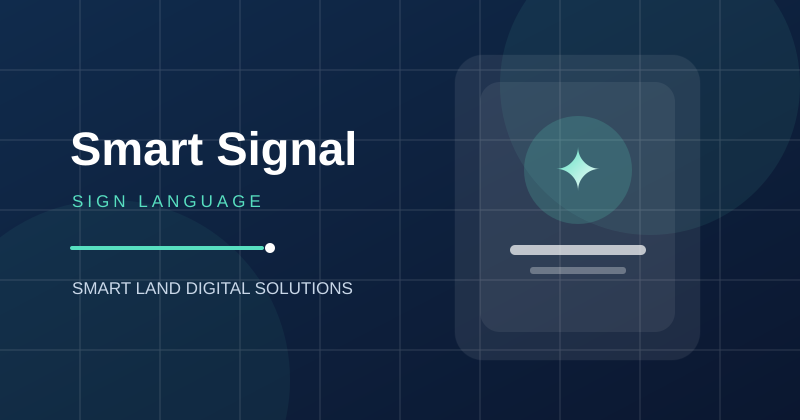
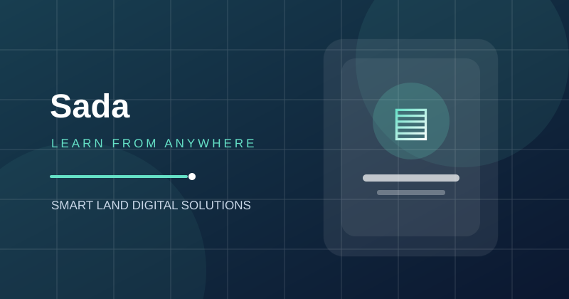
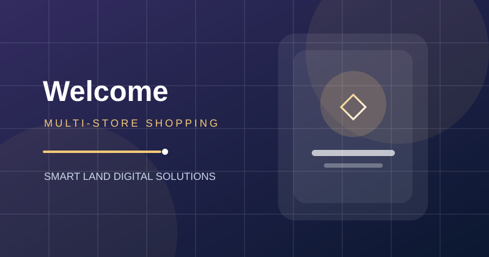

فهم الاحتياج
تحليل المشكلة وسياق الاستخدام قبل اقتراح الحل التقني.
تقنية أقرب إلى احتياجاتك
نصمّم ونطوّر حلولاً برمجية تجمع بين سهولة الاستخدام، قوة التقنية، والذكاء الاصطناعي لمساعدة الأعمال على النمو.
من نحن
Smart Land شركة استشارات وحلول تقنية عالمية، يعرّفها وصف الوظيفة بأنها تأسست عام 2011. تعمل الشركة على بناء حلول برمجية مخصصة لاحتياجات قطاعات مختلفة، مع دمج أدوات الذكاء الاصطناعي في بعض مراحل العمل.
يعرض هذا الموقع التعريفي نماذج من المنصات والتطبيقات المذكورة في وصف المشروع، ويقدّمها ضمن تجربة ويب واحدة سهلة التصفح ومتوافقة مع أحجام الشاشات المختلفة.
تعرّف إلى خدماتناتحليل المشكلة وسياق الاستخدام قبل اقتراح الحل التقني.
ربط التصميم والبرمجة والمحتوى ضمن تجربة متناسقة.
مراعاة قابلية التطوير وإمكانية تحسين الحل مع الوقت.
ما الذي نقدمه؟
مجموعة من المجالات التي تساعد المؤسسات على تقديم خدماتها بصورة أكثر وضوحاً وكفاءة.
تطوير تطبيقات ومنصات رقمية تراعي طبيعة الخدمة وسهولة الاستخدام.
↗توظيف تقنيات ذكية لدعم الوظائف الرقمية وتحسين تجربة المستخدم.
↗بناء منصات للخدمات والإعلانات والتعلّم والتجارة الإلكترونية.
↗حلول تساعد على تنظيم العمل وتنسيق البيانات والعمليات.
↗نماذج من المحفظة
الأوصاف التالية مستندة إلى أسماء المشاريع ووظائفها كما وردت في ملف الوظيفة، وليست ادعاءً بإحصاءات أداء غير موثقة.

تطبيق لترجمة لغة الإشارة، يهدف إلى دعم التواصل وجعل الخدمات الرقمية أكثر شمولاً.

منصة للإعلان عن العقارات والمركبات المعروضة للبيع أو الإيجار.

منصة للتعلّم عن بعد تتيح عرض المحتوى التعليمي عبر الإنترنت.

تطبيق للتسوق الإلكتروني متعدد المتاجر ضمن تجربة رقمية واحدة.
أنظمة تقنية لإسناد بعض عمليات الإدارة في قطاع الرعاية الصحية.
الوسائط المتعددة
يجمع هذا النموذج بين النصوص والرسوم المتجهية والألوان والحركة البصرية لتقديم فكرة الشركة بطريقة مختصرة. ويمكن استبدال مساحة العرض بفيديو تعريفي نهائي بعد مونتاجه وإضافة الصوت والترجمة النصية المتزامنة.
ملاحظة تنفيذية: لم يُرفق ملف فيديو فعلي في هذه النسخة. قبل التسليم النهائي، يُستحسن إنتاج فيديو MP4 خاص بالمشروع وإضافة ملف ترجمة WebVTT إلى مجلد media.
لنبدأ من الفكرة
هذا نموذج تعريفي لأغراض الوظيفة. يجب استبدال بيانات التواصل التجريبية ببيانات رسمية موثّقة قبل النشر العام.